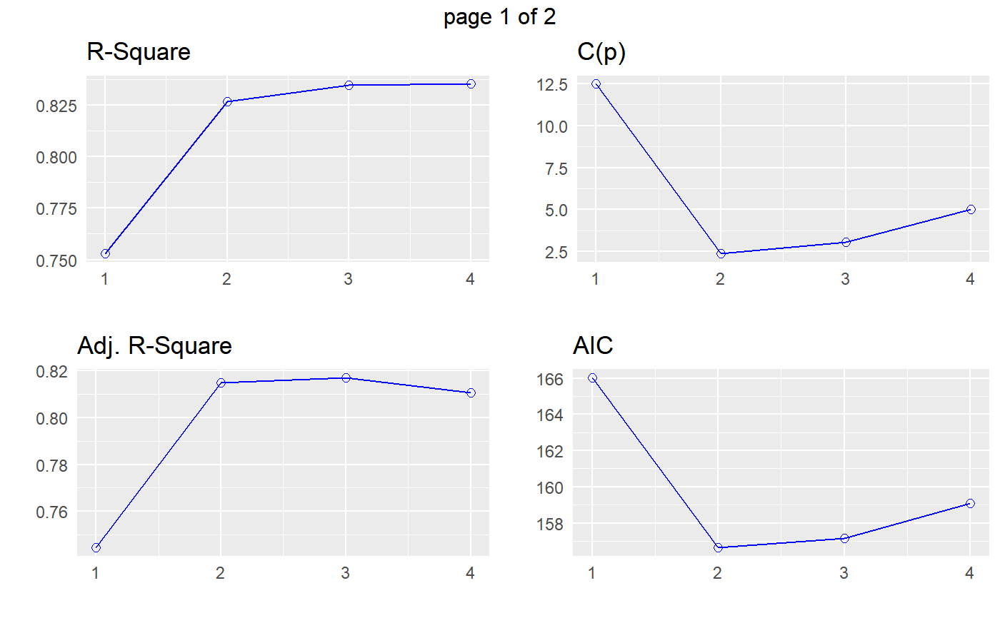

Select the subset of predictors that do the best at meeting some well-defined objective criterion, such as having the largest R2 value or the smallest MSE, Mallow's Cp or AIC.
ols_step_best_subset(model, ...) # S3 method for ols_step_best_subset plot(x, model = NA, print_plot = TRUE, ...)
| model | An object of class |
|---|---|
| ... | Other inputs. |
| x | An object of class |
| print_plot | logical; if |
ols_step_best_subset returns an object of class "ols_step_best_subset".
An object of class "ols_step_best_subset" is a data frame containing the
following components:
model number
predictors in the model
rsquare of the model
adjusted rsquare of the model
predicted rsquare of the model
mallow's Cp
akaike information criteria
sawa bayesian information criteria
schwarz bayes information criteria
estimated MSE of prediction, assuming multivariate normality
final prediction error
amemiya prediction criteria
hocking's Sp
ols_best_subset() has been deprecated. Instead use ols_step_best_subset().
Kutner, MH, Nachtscheim CJ, Neter J and Li W., 2004, Applied Linear Statistical Models (5th edition). Chicago, IL., McGraw Hill/Irwin.
Other variable selection procedures: ols_step_all_possible,
ols_step_backward_aic,
ols_step_backward_p,
ols_step_both_aic,
ols_step_forward_aic,
ols_step_forward_p
#> Best Subsets Regression #> ------------------------------ #> Model Index Predictors #> ------------------------------ #> 1 wt #> 2 hp wt #> 3 hp wt qsec #> 4 disp hp wt qsec #> ------------------------------ #> #> Subsets Regression Summary #> ------------------------------------------------------------------------------------------------------------------------------- #> Adj. Pred #> Model R-Square R-Square R-Square C(p) AIC SBIC SBC MSEP FPE HSP APC #> ------------------------------------------------------------------------------------------------------------------------------- #> 1 0.7528 0.7446 0.7087 12.4809 166.0294 74.2916 170.4266 9.8972 9.8572 0.3199 0.2801 #> 2 0.8268 0.8148 0.7811 2.3690 156.6523 66.5755 162.5153 7.4314 7.3563 0.2402 0.2091 #> 3 0.8348 0.8171 0.782 3.0617 157.1426 67.7238 164.4713 7.6140 7.4756 0.2461 0.2124 #> 4 0.8351 0.8107 0.771 5.0000 159.0696 70.0408 167.8640 8.1810 7.9497 0.2644 0.2259 #> ------------------------------------------------------------------------------------------------------------------------------- #> AIC: Akaike Information Criteria #> SBIC: Sawa's Bayesian Information Criteria #> SBC: Schwarz Bayesian Criteria #> MSEP: Estimated error of prediction, assuming multivariate normality #> FPE: Final Prediction Error #> HSP: Hocking's Sp #> APC: Amemiya Prediction Criteria #># plot model <- lm(mpg ~ disp + hp + wt + qsec, data = mtcars) k <- ols_step_best_subset(model) plot(k)